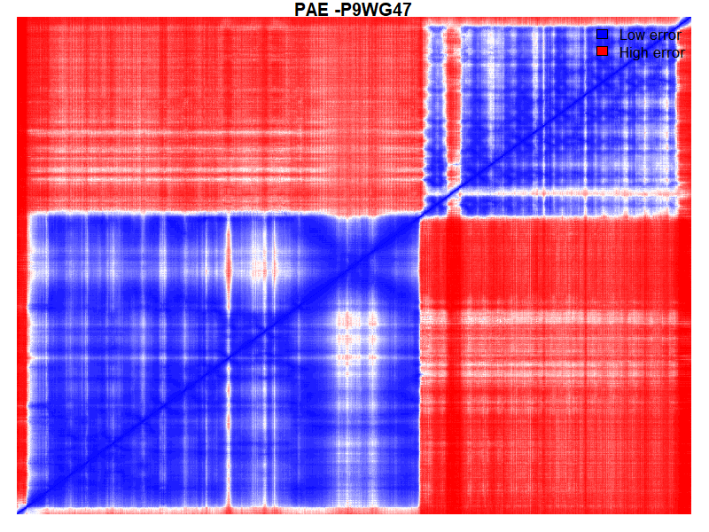
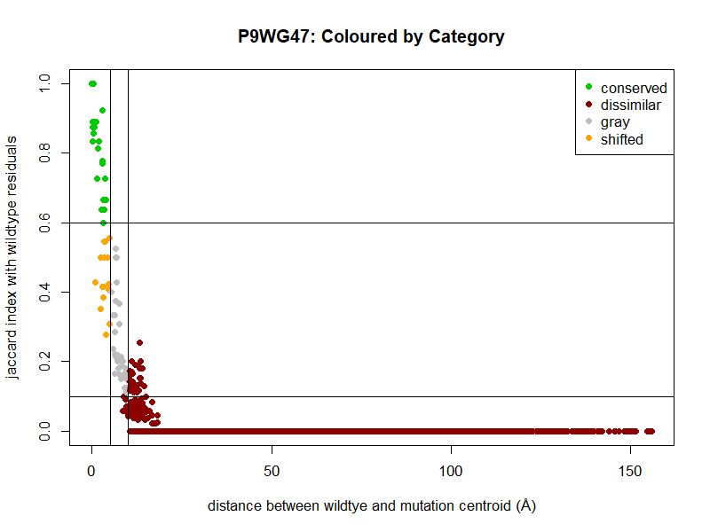
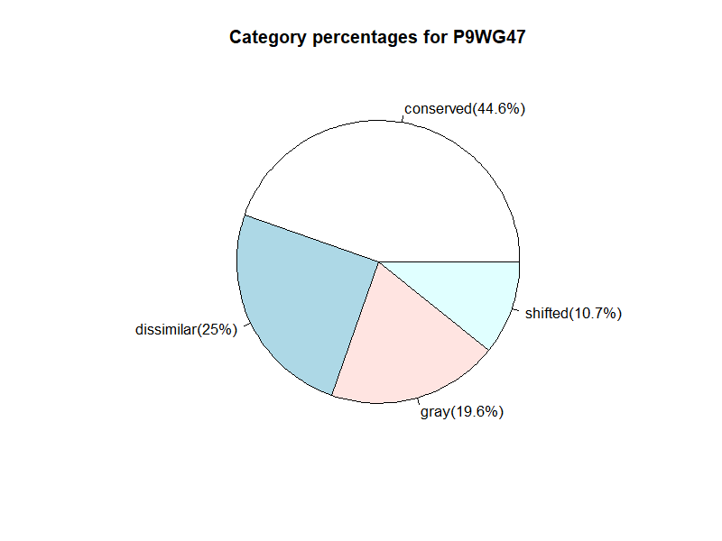
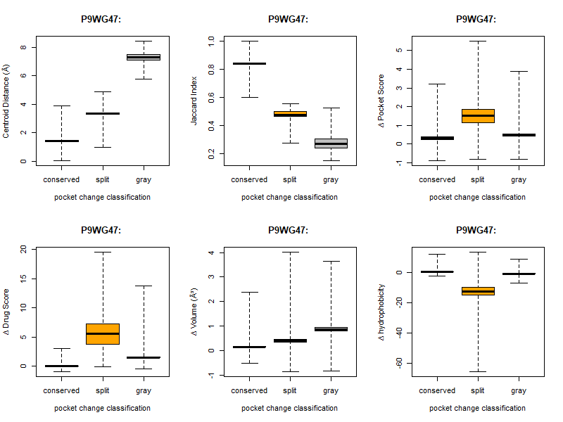

| PAE Mean | PAE Prop Under 5 |
PAE Max | pDLLT Mean | pDLLT Prop Over 90 |
pDLLT Prop Over 70 |
|---|---|---|---|---|---|
| 16.4 | 27.2% | 31 | 88.6 | 70.3% | 21.1% |
| Score type | Solvent Accessibility Agreement |
C-beta Interaction Potential |
All-Atom Interaction Potential |
Secondary Structure Agreement |
Torsion Angle Potential |
|---|---|---|---|---|---|
| Normalised | 0.6 | 0 | 0 | 0.7 | -0.3 |
| Z-Score | -0.9 | 1 | 1.9 | 0.9 | -0.4 |
| Average Local Quality Score |
Average Local Quality Score Error |
|---|---|
| 0.8 | 0.1 |
| Score type | QMEAN4 | QMEAN6 |
|---|---|---|
| Normalised | 0.8 | 0.8 |
| Z-Score | -0.1 | -0.2 |
| Chain | Wildtype | Residue | Mutation | QMEAN |
|---|---|---|---|---|
| A | E | 21 | Q | 0.6 |
| A | S | 95 | T | 0.9 |
| A | G | 668 | D | 0.9 |
| Chain | Wildtype | Residue | Mutation | Average Pairwise Distance |
Buried/Exposed | MSA data | Conservation (1-variable,9-conserved) |
Wildtypeprevalence(%) | Mutation prevalence(%) |
|---|---|---|---|---|---|---|---|---|---|
| A | E | 21 | Q | 0.4(0.1,0.6) | e | 129/150 | 5(6,5) | 11.6 | 67.4 |
| A | S | 95 | T | 0.4(0.1,0.6) | b | 137/150 | 5(5,5) | 2.2 | 46.7 |
| A | G | 668 | D | 0.4(0.1,0.6) | e | 150/150 | 1(3,1) | 8 | 42 |
| RMSD (all atom) Reference Wildtype |
||
|---|---|---|
| Run | Repaired Wildtype Structure |
CreatedMutated Structure |
| 1 | 0.1 | 0.1 |
| 2 | 0.1 | 0.1 |
| 3 | 0.1 | 0.1 |
| 4 | 0.1 | 0.1 |
| 5 | 0.1 | 0.1 |
| Total energy kcal mol-1 |
SD kcal mol-1 |
Estimate kcal mol-1 |
LCL (95%) kcal mol-1 |
UCL (95%) kcal mol-1 |
|---|---|---|---|---|
| -0.1 | 0.4 | -0.5 | -1.7 | 0.7 |
| Category | Description |
|---|---|
| conserved | Centroid distance between pockets on wildtype and mutated structures is ≤ 5 Å AND residual overlap between pockets measured with Jaccard Index is ≥ 0.6 |
| shifted | Centroid distance between pockets on wildtype and mutated structures is ≤ 5 Å OR residual overlap between pockets measured with Jaccard Index is ≤ 0.6 AND is not conserved |
| gray | Centroid distance between pockets on wildtype and mutated structures is > 5 Å AND ≤ 10 Å AND residual overlap measured between pockets with Jaccard Index is < 0.1 AND < 0.6 |
| dissimilar | Centroid distance between pockets on wildtype and mutated structures is > 10 Å AND residual overlap measured between pockets with Jaccard Index is ≤ 0.1 |


